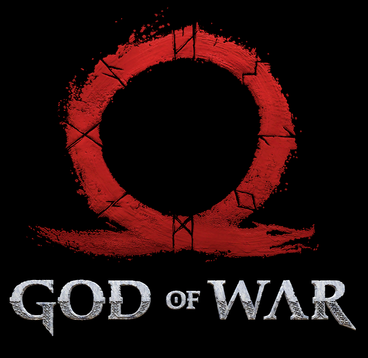

Bem-vindo a página informativa da trilogia principal de God of War, a série de jogos mundialmemte famosa que
envolve os jogadores em uma jornada cativante e emocionante, com cenas e momentos de tirar o fôlego. Experimente a
exploração do mundo grego e nórdico na pele do protagonista Kratos.

Plataformas disponíveis para os jogos principais da saga:
Playstation 2(PS2) - God of War e God of war 2
Playstation 3(PS3) - God of War 3
Playstation 4(PS4) - God of War 3, God of War 4 e God of War Ragnarok
Playstation 5(PS5) - God of War 4 e God of War Ragnarok
Sobre a Série:
God of War nasceu no PlayStation 2 em 2005, sendo o primeiro título de sucesso desenvolvido pelo Santa Monica Studio (SMS).
Idealizada por David Jaffe (também responsável por Twisted Metal), o primeiro GoW é tido por muitos como um dos melhores jogos
do PS2. A série de jogos de ação em terceira pessoa praticamente redefiniu os alicerces do gênero. Seus elementos de combate
frenético e Quick-Time-Events (QTE) se tornaram padrão e até hoje inspiram dezenas de outros jogos, o que torna God of War
um marco para a indústria de jogos.
Sobre o Estúdio:
Santa Monica Studio é uma desenvolvedora norte-americana de jogos eletrônicos sediada em Los Angeles,
Califórnia. O estúdio foi fundado em 1999 por Allan Becker e estava originalmente localizado em Santa Mônica, Califórnia,
até se mudar para Playa Vista em 2014. Hoje é uma divisão da Sony Interactive Entertainment, integrando a PlayStation Studios.
A companhia é mais conhecida por ter desenvolvido a maioria dos títulos da franquia God of War, além de já ter colaborado
com diversos outros estúdios menores, como a Thatgamecompany e Giant Sparrow, na produção dos jogos destes.